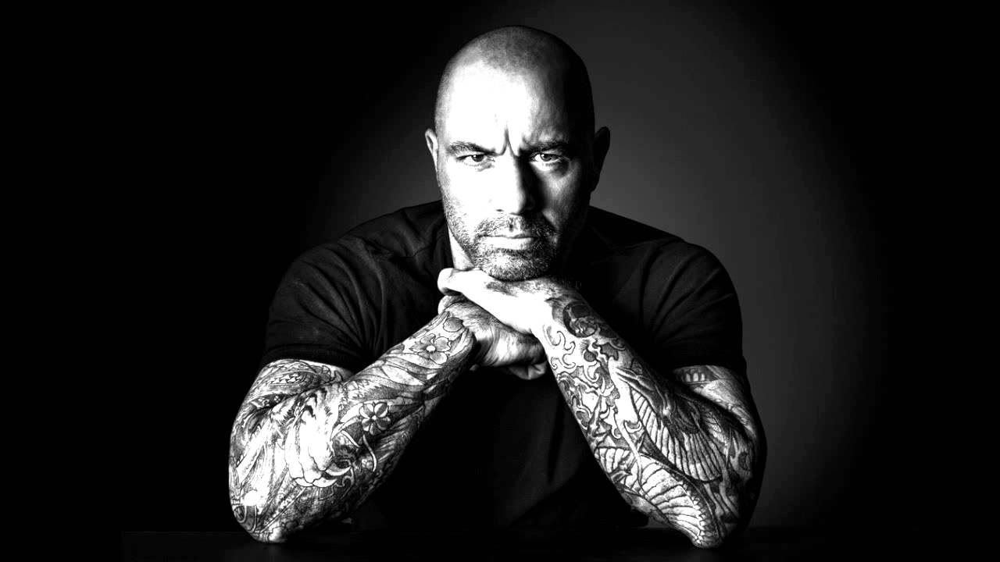

Joe Rogan
UFC commentator, comedian, podcast host

Joseph James Rogan (born August 11, 1967) is an American comedian, podcast host, and mixed martial
arts
color commentator. He has also worked as a television host and an actor.
Rogan began a career in comedy in August 1988 in the Boston area. After relocating to Los Angeles in
1994, he signed an exclusive developmental deal with Disney and appeared as an actor on several
television shows including Hardball and NewsRadio.
In 1997, he started working for the Ultimate Fighting Championship (UFC) as an interviewer and color
commentator. Rogan released his first comedy special in 2000. In 2001, he put his comedy career on hold
after becoming the host of Fear Factor and would resume his stand-up career shortly after the show's end
in 2006.
In 2009, Rogan launched his podcast The Joe Rogan Experience. Rogan has repeatedly advocated for
"long-form media". The podcast has been cited as being more popular and viewed than many traditional
media sources